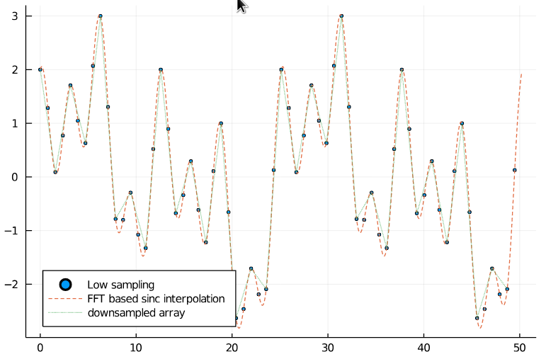

Resampling
To sinc interpolate a signal, it is possible to zero pad a signal in Fourier space and to do an inverse Fourier transform effectively evaluating the Fourier series at more samples. If the signal was initially band-limited, sinc interpolation leads to smoother, perfectly interpolated signals
Sinc interpolation
Below you can find a simple example for up sampling using resample. Furthermore, there is an image interpolation Pluto.jl notebook in the examples folder. We can see that the interpolated signal matches the higher sampled signal well.
begin
N_low = 128
x_min = 0.0
x_max = 16π
xs_low = range(x_min, x_max, length=N_low+1)[1:N_low]
xs_high = range(x_min, x_max, length=5000)[1:end-1]
f(x) = sin(0.5*x) + cos(x) + cos(2 * x) + sin(0.25*x)
arr_low = f.(xs_low)
arr_high = f.(xs_high)
end
begin
N = 1000
xs_interp = range(x_min, x_max, length=N+1)[1:N]
arr_interp = resample(arr_low, N)
end
begin
scatter(xs_low, arr_low, legend=:bottomleft, markersize=2, label="Low sampling")
plot!(xs_interp, arr_interp, label="FFT based sinc interpolation", linestyle=:dash)
plot!(xs_high, arr_high, linestyle=:dashdotdot, label="High sampling")
end
Downsampling
32 samples in the downsampled signal should be sufficient for Nyquist sampling. And as we can see, the downsampled signal still matches the original one.
begin
N_ds = 32
xs_ds = range(x_min, x_max, length=N_ds+1)[1:N_ds]
arr_ds = resample(arr_high, N_ds)
end
begin
scatter(xs_low, arr_low, legend=:bottomleft, markersize=2, label="Low sampling")
plot!(xs_interp, arr_interp, label="FFT based sinc interpolation", linestyle=:dash)
plot!(xs_ds, arr_ds, label="resampled array", linestyle=:dot)
end
Image Upsampling
Having a Nyquist sampled image, it is possible to perform a sinc interpolation and creating visually much nicer images. However, the information content does not change between both images. The full Pluto notebook is here. The right image is the upsampled version of the left one.

There are fast versions (upsample2) for upsampling by a factor of 2.
Function References
FourierTools.resample — Functionresample(arr, new_size [, normalize=true])Calculates the sinc interpolation of an arr on a new array size new_size. It is a re-evaluation of the Fourier series at new grid points. new_size can be arbitrary. Each dimension is then independently either up or downsampled.
This method is based on FFTs and therefore implicitly assumes periodic boundaries and a finite frequency support.
normalize=true by default multiplies by an appropriate factor so that the array size is included in the scaling. This results in an array having roughly the same mean intensity.
Basic Principle
If size(new_size)[i] > size(arr)[i], we apply zero padding in Fourier space.
If size(new_size)[i] < size(arr)[i], we cut out a centered part of the Fourier spectrum.
We apply some tricks at the boundary to increase accuracy of highest frequencies.
For real arrays we use rfft based operations, for complex one we use fft based ones.
Examples
sinc interpolation of 2 datapoints result in an approximation of cosine.
julia> resample([2.0, 0.0], (6,))
6-element Vector{Float64}:
2.0
1.5
0.5
0.0
0.5
1.5
julia> resample([2.0, 0.0], (6,)) ≈ 1 .+ cos.(2π .* (0:5)./6)
trueFourierTools.resample_by_FFT — Functionresample_by_FFT(mat, new_size)Does a resampling based on fft. This function is called by resampling.
FourierTools.resample_by_RFFT — Functionresample_by_RFFT(mat, new_size)Does a resampling based on rfft. This function is called by resampling.
FourierTools.resample_nfft — Functionresample_nfft(img, new_pos, dst_size=nothing; pixel_coords=false, is_local_shift=false, is_src_coords=true, reltol=1e-9)resamples an ND-array to a set of new positions new_pos measured in either in pixels (pixel_coords=true) or relative (Fourier-) image coordinates (pixel_coords=false). new_pos can be
- an array of
Tuplesspecifying the zoom along each direction - an
N+1dimensional array (forN-dimensional input dataimg) of destination positions, the last dimension enumerating the respective destination coordinate dimension. - a function accepting a coordinate
Tupleand yielding a destination positionTuple.
resample_nfft can perform a large range of possible resamplings. Note that the default setting is is_src_coords=true which means that the source coordinates of each destination position have to be specified. This has the advantage that the result has usually less artefacts, but the positions may be more less convenient to specify.
Arguments
img: the image to apply resampling tonew_pos`: specifies the resampling. See description above.dst_size: this argument optionally defines the output size. If you require a different result size fornew_posbeing a function or withis_src_coords=true, state it here. By default (dst_size=nothing) the destination size will be inferred form the argumentnew_posor assumed to besize(img).is_local_shift: specifies, whether the resampling coordinates refer to a relative shift or absoluter coordinatesis_in_pixels: specifies whether the coordinates (or relative distances) are given in pixel pitch units (is_in_pixels=true) or in units relative to the array sizes (Fourier convention)is_src_coords: specifies, whether the resampling positions refer to sampling at source (is_src_coords=true) or destination coordinatesreltol: will be used as an argument to thenfftfunction spedifying the relative precision to calculate to
See also: resample, resample_czt
Examples
julia> using FourierTools, TestImages, NDTools, View5D, IndexFunArrays
julia> a = Float32.(testimage("resolution"));
julia> b = resample_nfft(a, t -> (2.5f0 *sign(t[1])*t[1]^2, t[2]*(0.5f0+t[1]))); # a complicated deformation
julia> sz = size(a);
# stacking only the displacement along the last dimension:
julia> new_pos = cat(xx(sz,scale=ScaFT), zeros(sz), dims=3);
julia> c = resample_nfft(a, new_pos, is_local_shift=true); # stretch along x using an array
julia> new_pos = cat(.-xx(sz,scale=ScaFT)./2, zeros(sz), dims=3);
julia> c2 = resample_nfft(a, new_pos, is_local_shift=true, is_src_coords=false); # stretch along x using an array
# Notice the difference in brightness between c and c2
julia> @ve a b c c2 # visualize distortion and x-shrinks.
# Lets try a 2D rotation:
# define a rotation operation
julia> rot_alpha(a, t) = (cosd(a)*t[1] + sind(a)*t[2], -sind(a)*t[1]+cosd(a)*t[2])
# positions as an array of tuples
julia> new_pos = rot_alpha.(10.0, idx(a, scale=ScaFT))
# lets do the resampling, this time by specifying the destination coordinates:
julia> d = resample_nfft(a, new_pos, is_src_coords=false);
#display the result
julia> @ve a d
#how about a spiral deformation?
julia> new_pos = rot_alpha.(rr(a), idx(a, scale=ScaFT))
julia> e = resample_nfft(a, new_pos);
julia> f = resample_nfft(a, new_pos, is_src_coords=false);
# observe the artefacts generated by undersampling in the destination grid
julia> @ve a e fFourierTools.resample_czt — Functionresample_czt(arr, rel_zoom; shear=nothing, shear_dim=nothing, fix_nyquist=false, new_size = size(arr),
do_damp=false, rel_pad=0.2, remove_wrap=true)resamples the image with fixed factors or a list of separable functions using the chirp z transform algorithm. The data is first padded by a relative amount rel_pad which is needed to avoid wrap-around problems. As opposed to resample(), this routine allows for arbitrary non-integer zoom factors. It is reasonably fast but only allows a stretch (via rel_zoom) and a shift (via shear in pixels) per line or column.
Note that each entry of the tuple in rel_zoom or shear describes the zoom or shear to apply to all other dimensions individually per entry along this dimension number.
Arguments:
arr: array to resamplerel_zoom: factors to zoom as a tuple or a tuple of functions defining the zoomsshear: a tuple of shears or a tuple of shear functions defining the shearsshear_dim: which dimension to shearfix_nyquist: defines whether to applyfix_nyquistwhen using the applyshiftstrength! function.do_damp: applies a padding and damping outside the region to zoom, to avoid artefactsrel_pad: amount of padding to apply, ifdo_dampis trueremove_wrap: removes the wrap-around when zooming out.new_size: size of the result array. If not provided the same as the input size will be used.
Examples
julia> using TestImages, NDTools, View5D
julia> a = Float32.(testimage("resolution"));
julia> b = resample_czt(a, (0.99,1.3)); # just zooming and shrinking
julia> c = resample_czt(a, (x->0.8+x^2/3,x->1.0+0.2*x)); # a more complicated distortion
julia> d = resample_czt(a, (x->1.0,x->1.0), shear=(x->50*x^2,0.0)); # a more complicated distortion
julia> @ve a,b,c,d # visualize distortionsFourierTools.upsample2 — Functionupsample2(mat::AbstractArray{T, N}; dims=1:N, fix_center=false, keep_singleton=false)Upsamples by a factor of two in all dimensions. The code is optimized for speed by using subpixelshifts rather than Fourier resizing. By default the first pixel maintains its position. However, this leads to a shift of the center (size[d]÷2+1) in the resulting array for uneven array sizes. fix_center=true can be used to remedy this and the result array center position will agree to the source array center position. keep_singleton=true will not upsample dimensions of size one. Note that upsample2 is based on Fourier-shifting and you may have to deal with wrap-around problems.
julia> upsample2(collect(collect(1.0:9.0)'))
2×18 Matrix{Float64}:
1.0 0.24123 2.0 3.24123 3.0 2.93582 4.0 5.0 5.0 5.0 6.0 7.06418 7.0 6.75877 8.0 9.75877 9.0 5.0
1.0 0.24123 2.0 3.24123 3.0 2.93582 4.0 5.0 5.0 5.0 6.0 7.06418 7.0 6.75877 8.0 9.75877 9.0 5.0
julia> upsample2(collect(collect(1.0:9.0)'); fix_center=true, keep_singleton=true)
1×18 Matrix{Float64}:
5.0 1.0 0.24123 2.0 3.24123 3.0 2.93582 4.0 5.0 5.0 5.0 6.0 7.06418 7.0 6.75877 8.0 9.75877 9.0FourierTools.upsample2_abs2 — Functionupsample2_abs2(mat::AbstractArray{T, N}; dims=1:N)Upsamples by a factor of two and applies the abs2 operation. The code is optimized for speed.
FourierTools.barrel_pin — Functionbarrel_pin(arr, rel=0.5)emulates a barrel (rel>0) or a pincushion (rel<0) distortion. The distortions are calculated using resample_czt() with separable quadratic zooms.
See also: resample_czt()
Examples
julia> using TestImages, NDTools, View5D
julia> a = Float32.(testimage("resolution"))
julia> b = barrel_pin(a,0.5) # strong barrel distortion
julia> c = barrel_pin(a,-0.5) # strong pin-cushion distortion
julia> @ve a,b,c # visualize distortions